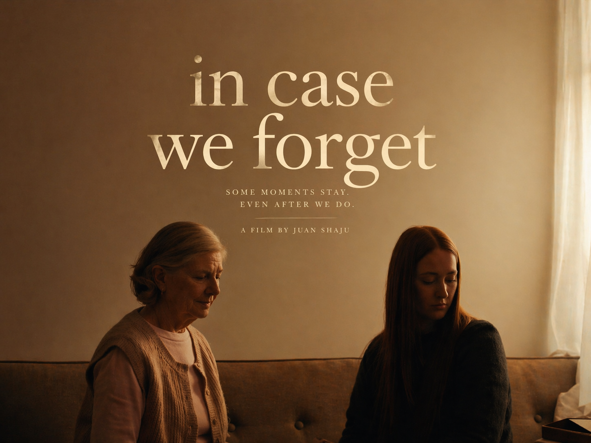

VISUAREALM
An Independent Film Production House.
YOUR VISION. OUR PRODUCTION. —
WE DON'T JUST MAKE FILMS. WE SUPPORT FILMMAKERS. —
A COMMUNITY FOR CRAFT. A HOUSE FOR CINEMA. —
BRING YOUR STORY. LET'S SHOOT IT. —
YOUR VISION. OUR PRODUCTION. —
WE DON'T JUST MAKE FILMS. WE SUPPORT FILMMAKERS. —
A COMMUNITY FOR CRAFT. A HOUSE FOR CINEMA. —
BRING YOUR STORY. LET'S SHOOT IT. —
VISUAREALM is an independent production house built on collaboration and craft. We exist to support filmmakers, providing the creative backing and physical production resources needed to bring bold visions to life. If you have a story, we are your home.
OUR PRODUCTIONS

In Case
We Forget
Elaine, a 54-year-old widow in the early stages of cognitive decline, packs up her family home with her daughter, Brooke. As familiar details slip away, how many sugars her husband took, why a photo is missing-she faces the terrifying "in-between" of leaving her past and not yet recognizing her future. In Case You Forget is a quiet look at dementia from the Inside. A Mother Losing Her Memories but Still Fighting to Hold on to Who She Is.
Explore on IMDbThe Key
Left Behind
To move on from her past, a woman must play one final, ghostly childhood game with her sister-a game that holds the key to a dark family secret.
Explore on IMDb

The Frequency
of Silence
A deep exploration into the unspoken bonds of family and the weight of silence in a house that no longer rings with laughter. Some frequencies are felt long before they are heard.
Explore on IMDb